icons
Once you've written your program, you might need to debug it. The IDE debugger lets you detect and diagnose errors in your programs, whether they're running locally or remotely.
Suggested prior reading:
Related information:
In this chapter:
The debugger lets you see what's going on "inside" a program while it executes, and what it was doing at the moment it crashed or misbehaved.
In order to use the full power of the Debug perspective, you must use executables compiled for debugging. These executables contain additional debug information that lets the debugger make direct associations between the source code and the binaries generated from that original source. The debuggable executables have _g appended to their filenames.
The IDE debugger uses GDB as the underlying debug engine. It translates each GUI action into a sequence of GDB commands and processes the output from GDB to display the current state of the program being debugged.
The views update only when the program is suspended.
| Editing the source after compiling causes the line numbering to be out of step because the debug information is tied directly to the source. Similarly, debugging optimized binaries can also cause unexpected jumps in the execution trace. |
To debug a program, you must build an executable and launch the debugging session. Once you've launched your debugging session, you'll want to control the session.
Although you can debug a regular executable, you get far more control by building debug variants of the executables. When you created your project, you may have already set the option to make the IDE build one. If so, you should have debuggable executables with _g appended to the filename. If not, you must set the IDE to build debug variants:
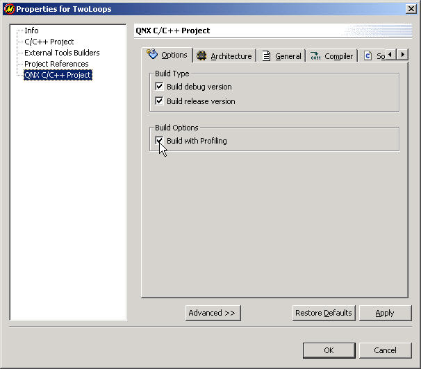
For more information about setting project options, see the Common Wizards chapter.
| For a full description of starting your programs and the Launch Configurations options, see the Starting Your Programs chapter. |
Once you've got a debuggable executable, you must create a launch configuration.
To launch a debuggable executable:
The Debug view shows a listing of your debug sessions and lets you run your code step-by-step. The IDE is powerful; you can simultaneously debug multiple processes, each with multiple threads.
The Debug view lets you manage the debugging or running of a program in the workbench. This view displays the stack frame for the suspended threads for each target you're debugging. Each thread in your program appears as a node in the tree. The view displays the process for each program you're running.
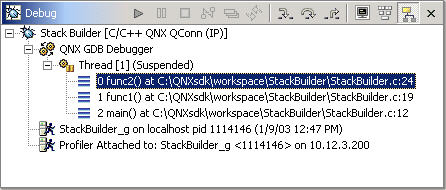
The Debug view shows the target information in a tree hierarchy as follows (shown here with a sample of the possible icons):
| Session item | Description | Possible icons |
|---|---|---|
| Launch instance | Launch configuration name and launch type (e.g. Stack Builder [C/C++ QNX QConn (IP)]) | |
| Debugger instance | Debugger name and state (e.g. GDB Debugger (Breakpoint hit)) | |
| Thread instance | Thread number and state (e.g. Thread[1] (Suspended)) | |
| Stack frame instance | Stack frame number, function, filename, and file line number |
| The number beside the thread label is a reference counter for the IDE, not a thread identification number (TID). |
The IDE displays stack frames as child elements. It displays the reason for the suspension beside the target, such as end of stepping range, breakpoint hit, signal received, and so on. When a program exits, the IDE displays the exit code.
The label includes the thread's state. In the example above, the label indicates that the thread was suspended because the program hit a breakpoint. You can't suspend only one thread in a process; when one thread is suspended, they all are.
The Debug view also drives the C/C++ Editor; as you step through your program, the C/C++ Editor highlights the location of the execution pointer.
After you start your debug execution, it stops (by default) in main() and waits for your input. (For information about changing this setting, see the "Debugger tab" section in the Starting Your Programs chapter.) You can control your debug execution in various ways, but they all rely on a core set of debug controls.
The debug execution controls appear in the following places (though they don't all appear in any one place):
The debug execution controls are superceded by breakpoints. For example, if you ask the program to step over a function (i.e. run until it finishes that function) and the program hits a breakpoint, it pauses, even though it hasn't finished the function.
The icons and menu items are context-sensitive. For example, you can terminate a process, but you can't terminate a stack frame.
| Action | Icon | Hotkey | Description |
|---|---|---|---|
| Resume | F8 | Run the process freely from current point | |
| Suspend | Regain control of the running process | ||
| Terminate | Kill the process | ||
| Restart | Rerun the process from the beginning | ||
| Step into | 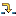 | F5 | Step forward one line, going into function calls |
| Step over | F6 | Step forward one line, not going into function calls | |
| Run to return | F7 | Finish this function |
You can control how many steps the program runs before it suspends again (if you want it to suspend at all). You'll probably use the Debug view primarily to control your program flow.
To control your debug execution:
If you're running your debug session without the Debug view showing, you can use either the hotkeys or the Run menu to step through your program. The customization works on a per-perspective basis; if you want to use the hotkeys in another perspective, you must enable them there, too.
To enable the debug hotkeys:
You can control your debug session using the C/C++ Editor by having the program run until it hits the line your cursor is sitting on. (This is the same as the gdb until command.) If the program never hits that line, the program runs until it finishes.
You enable this option on a per-perspective basis. The option is enabled by default in the Debug perspective.
To enable debug execution using the C/C++ Editor:
To debug using the C/C++ Editor:
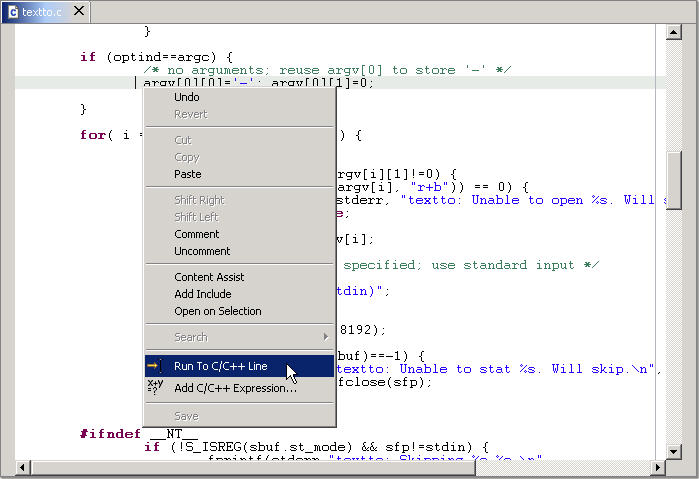
The program continues running until it hits that line.
In addition to controlling the individual stepping of your programs, you can also control the debug session itself. You can perform actions such as terminating the session, stopping the program, and so on, using the debug launch controls available in the Debug view or in the Debug view's right-click context menu. As with the other debug controls, these are context-sensitive; some are disabled depending on whether you've selected a thread, a process, and so on, in the Debug view.
| Action | Icon | Description |
|---|---|---|
| Terminate | Kill the selected process | |
| Terminate & Remove | Kill the selected process and remove it from the Debug view | |
| Terminate All | Kill all active processes in the Debug view | |
| Disconnect | Detach the debugger (i.e. gdb) from the selected process (useful for debugging attached processes) | |
| Remove All Terminated Launches | Clear all the killed processes from the Debug view | |
| Relaunch | Restart the process |
When you're debugging, you can also examine your program as it steps into functions that you don't have source code for, such as printf(). Normally, the debugger steps over these functions, even when you click Step Into. When the instruction pointer enters functions for which it doesn't have the source, the IDE shows the function in the Assembly Editor.
To step into assembler functions during debugging:
| In the Debug view, click the Disassembly Mode On/Off toggle button |
This section contains the following subsections:
The Variables view displays information about the variables in the currently selected stack frame:
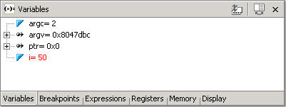
When the execution stops, the changed values are highlighted in red (by default). Like the other debug-related views, the Variables view doesn't try to keep up with the execution of a running program; it updates only when execution stops.
You can set whether or not the variable type (e.g. int) is displayed by clicking the Show Type Names toggle button  .
.
You can customize the look of the Variables view and set the color of changed variables (red by default).
To access the Variables view preferences:
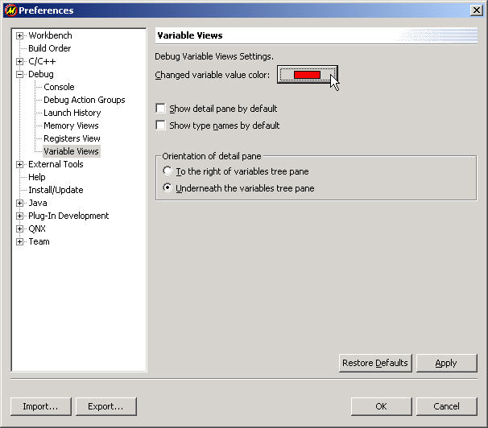
During the course of debugging, you may wish to artificially change the value of a variable to test how your program handles the setting or to speed through a loop.
To change a variable value while debugging:
The Breakpoints view lists all the breakpoints and watchpoints you've set in your open projects:
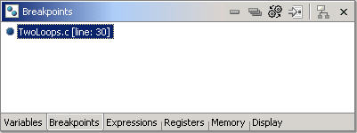
A breakpoint makes your program stop whenever a certain point in the program is reached. For each breakpoint, you can add conditions to better control whether or not your program stops.
A watchpoint is a special breakpoint that stops the program's execution whenever the value of an expression changes, without specifying where this may happen. Unlike breakpoints, which are line-specific, watchpoints are event-specific and take effect whenever a specified condition is true, regardless of when or where it occurred.
| Object | Icon |
|---|---|
| Breakpoint | |
| Watchpoint (read) | 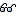 |
| Watchpoint (write) | |
| Watchpoint (read and write) |
If the breakpoint or watchpoint is for a connected target, a check mark  is superimposed on the icon.
is superimposed on the icon.
The rest of this section describes how to:
| While the Breakpoints view displays both breakpoints and watchpoints, the procedures for setting them differ somewhat. |
You set breakpoints on an executable line of a program. If the breakpoint is enabled when you debug, the execution suspends before that line of code executes.
To add a breakpoint:
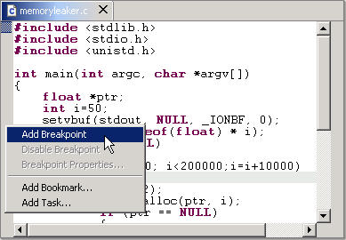
A dot  appears, indicating a breakpoint. A corresponding dot
appears, indicating a breakpoint. A corresponding dot  also appears in the Breakpoints view, along with the name of the file in which you set the breakpoint:
also appears in the Breakpoints view, along with the name of the file in which you set the breakpoint:
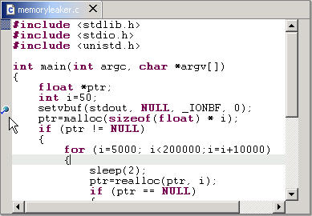
To add a watchpoint:
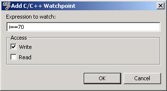
After you've set your breakpoint or watchpoint, the IDE unconditionally halts the program when:
Or:
To set the properties for a breakpoint or watchpoint:
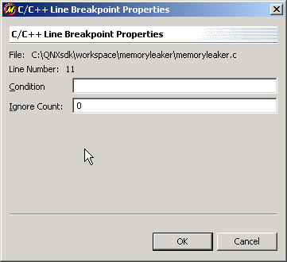
You may wish to temporarily deactivate a breakpoint or watchpoint without losing the information it contains.
To disable or enable a breakpoint or watchpoint:
| In the Breakpoints view, right-click the breakpoint or watchpoint and select Disable or Enable (Or for breakpoints only, right-click the breakpoint in the editor area and select Disable Breakpoint or Enable Breakpoint): 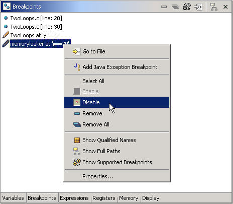 |
To disable or enable all (or many) breakpoints or watchpoints:
To remove one or more breakpoints and watchpoints:
Follow the procedure described in "Disabling and enabling breakpoints and watchpoints", with the following exceptions:
|
To remove all breakpoints and watchpoints:
| In the Breakpoints view, right-click and select Remove All. |
The Expressions view lets you evaluate and examine the value of expressions:
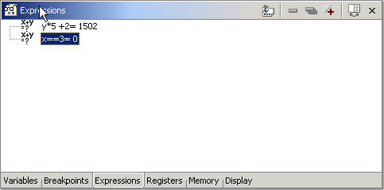
To evaluate an expression:
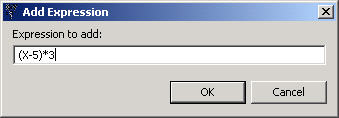
The Registers view displays information about the registers in the currently selected stack frame. When the execution stops, the changed values are highlighted. The functionality of the Registers view is very similar to that of the Variables view; for more information, see the "Inspecting your variables (Variables view)" section in this chapter.
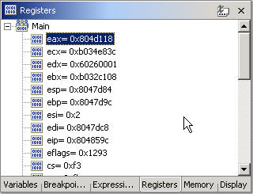
You can also customize the colors in the Registers view and change the default value of the Show Type Names option.
To access the Registers view customization dialog:
The Memory view lets you inspect and change your process memory. The view consists of four tabs that let you inspect multiple sections of memory:
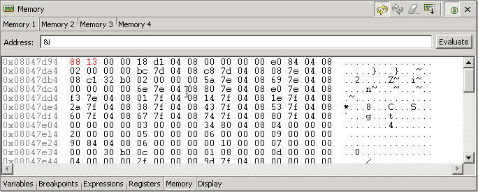
The Memory view supports the same addressing as the C language. You can address memory using expressions such as 0x0847d3c, (&y)+1024, and *ptr.
To inspect your process memory:
| 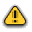 | Changing your process memory can make your program crash. |
To change your process memory:
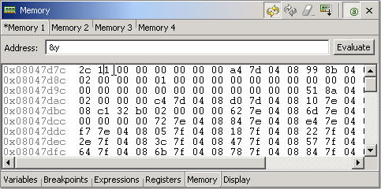
You can configure your output to display hexadecimal or decimal. You can also set the number of display columns and the memory unit size. You can configure each memory tab independently.
To configure the output format:
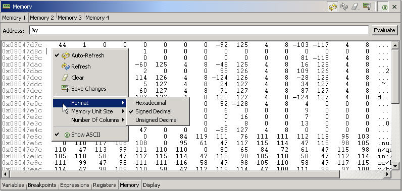
The output reflects your selection. Note that some output formats are best viewed in a nonproportional font such as Courier.
You can customize the Memory view to display in different colors and fonts. You can also customize some of its behavior. The customizations affect the entire Memory view.
To access the Memory view customization dialog:
The Console view shows you the output of the execution of your program and lets you supply input to your program:
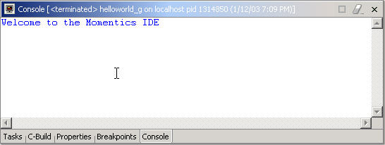
| See also the "Debugging with GDB (Console view)" section, below. |
The console shows three different kinds of text, each in a different default color:
You can choose different colors for these kinds of text on the preferences pages.
To access the Console view customization dialog:
The IDE lets you debug using a subset of the commands that the gdb utility offers:

| See also the "Viewing your output (Console view)" section, above. |
The GDB Console view is part of the regular Console view but isn't accessible until you toggle to it. Once you do, GDB output appears in place of the regular Console view output.
To enable the GDB Console view:
The GDB Console view lets you bypass the IDE and talk directly to GDB; the IDE is unaware of anything done in the GDB Console view. Thus, items such as breakpoints that you set from the GDB Console view don't appear in the C/C++ Editor.
| You can't use the Tab key for line completion because the commands are sent to GDB only when you press Enter. |
To use the GDB Console view:
| In the GDB Console view, enter a command. For example, enter help to get a list of commands; nexti to step one instruction, proceeding through subroutine calls; nexti 3 to step three: 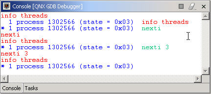 |